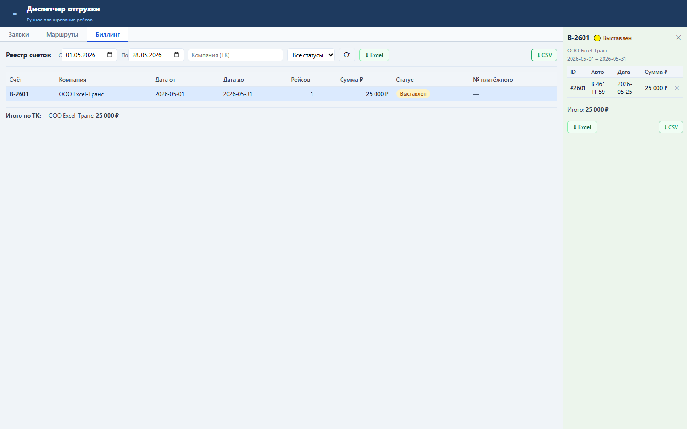

Блок выгружает выбранный счёт в XLSX с реквизитами, рейсами и итоговой суммой.
Экспорт читает заголовок счёта и GET /billing/orders/{id}/tasks, затем формирует .xlsx. При отсутствии openpyxl используется встроенный минимальный генератор XLSX.
Оператор получает файл для отправки перевозчику или бухгалтерской сверки.

Проверка: functional, UI smoke и load gates пройдены.